Mandarin Lens V2 · actual UI captures
Original local fixtures unless specified. No generated mockups. Translation doubles and genuine model captures are labeled separately.
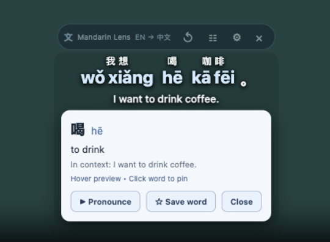
Before: owner-provided screenshot of the earlier oversized overlay. Not a same-frame size benchmark.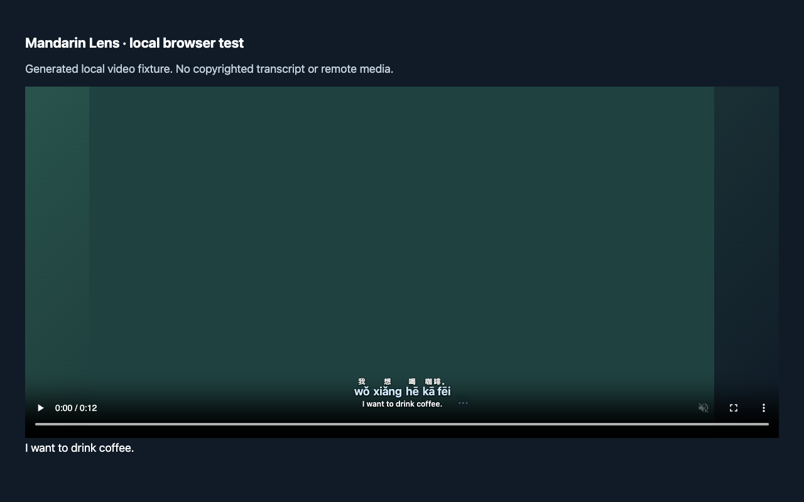
V2 actual Chrome + real on-device English→Chinese model, original local test media.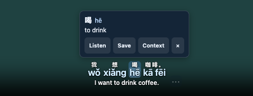
V2 actual Chrome + real model word popover.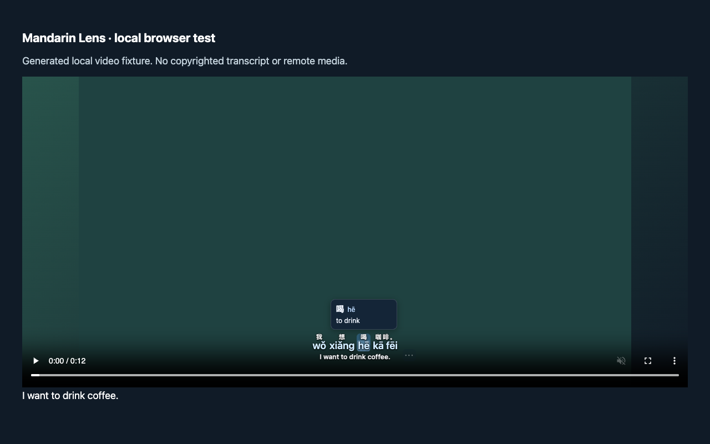
Packaged Chromium, generated media and explicit Translator double: hover geometry.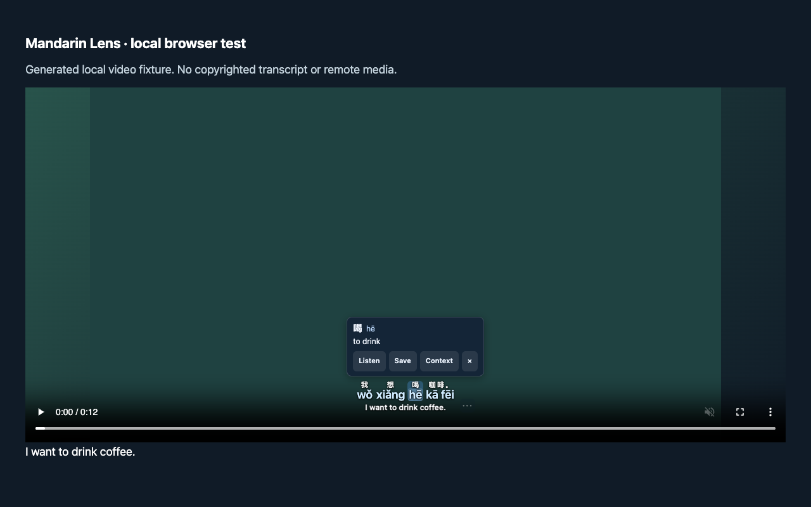
Packaged Chromium, generated media and explicit Translator double: pinned card.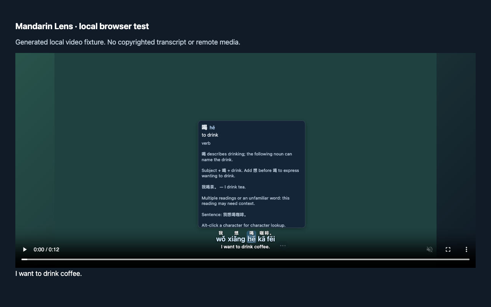
Packaged Chromium with Translator double: expanded context.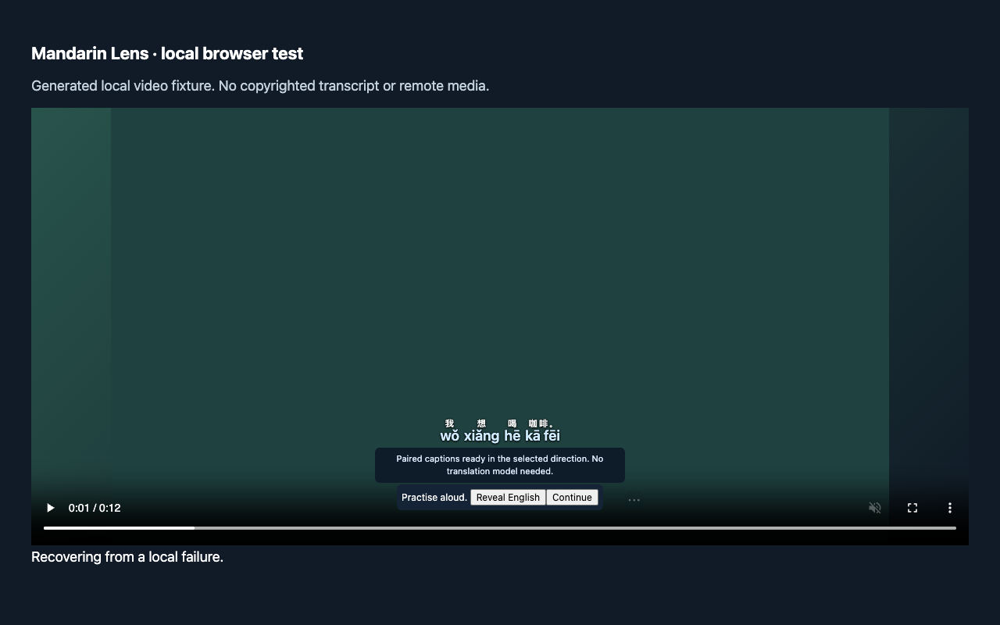
Packaged Chromium: bilingual imported captions and shadowing exercise.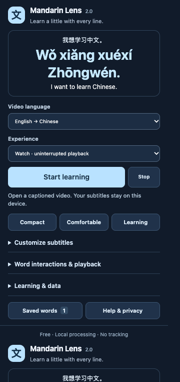
Actual packaged popup with customized pinyin size; not default appearance.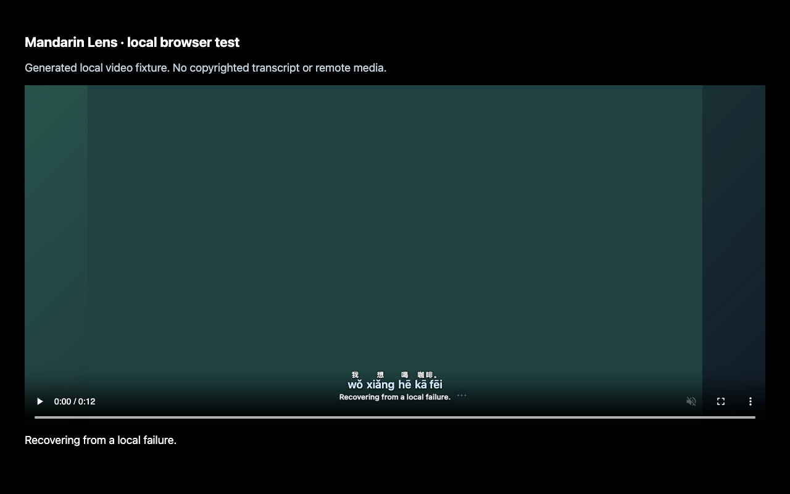
Original local media in a fullscreen player container; not native video-only fullscreen.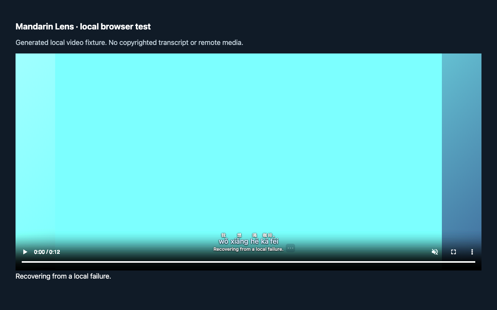
Generated video with CSS brightness 4, explicit translation double.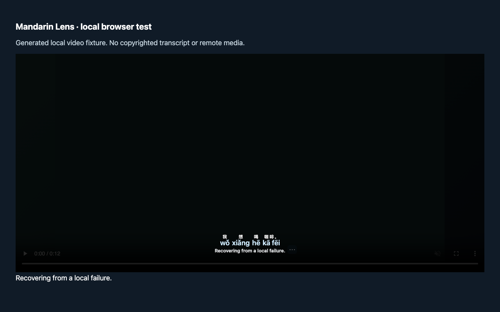
Generated video with CSS brightness .15, explicit translation double.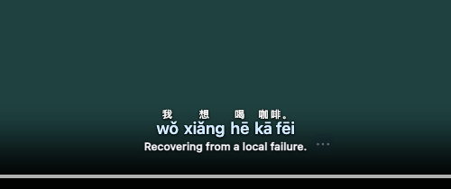
CDP 2× display-scale emulation; not physical monitor scaling.